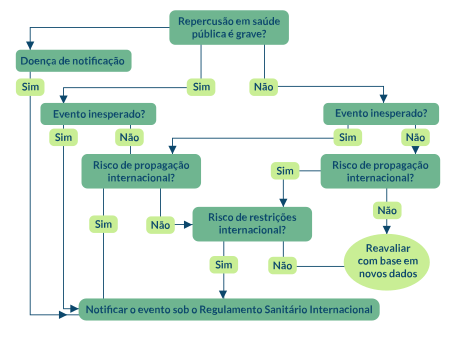

<div class="largura-1_1">
    
</div>
<div class="coluna-esquerda largura-1_1 "
    style="display: flex;height: 380px;align-items: center;justify-content: center;flex-direction: column;">
    <p style="font-weight: bold;">Figura 3. Fluxograma de decisão baseado no ANEXO 2 do RSI</p>
    
    <p style="font-size: 11px;/* position: absolute; *//* bottom: 40px; *//* right: 90px; */"><b>Fonte</b>:
        elaborado pelo autor.</p>
</div>
<footer style="padding: 0; height: 40px;">
    
</footer>